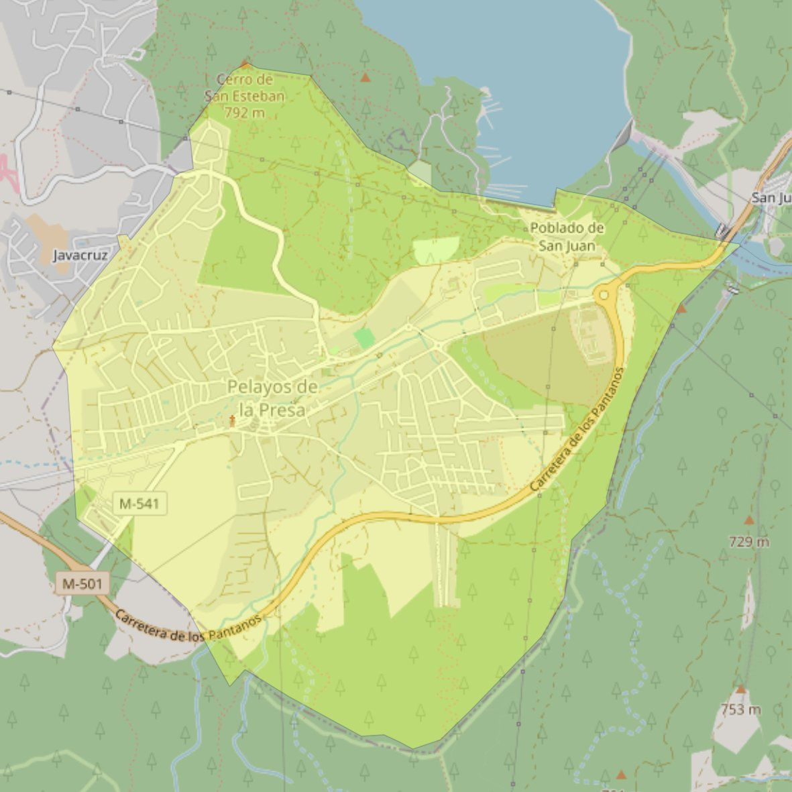

Nuestra Señora de la Asunción

- Arciprestazgo
- San Martín de Valdeiglesias
- Población
- Pelayos de la Presa
- Dirección postal
- c/ Marcial Lorente, s/n
- Código postal
- 28696
- Extensión
- 7,52 km² (752 ha)
- Teléfono
- 918 645 006
- Correo electrónico
- parroquiaasuncionpelayos@gmail.com